Lesson 4 - Surfaces#
Authors: Your Name
Last Edited: 2023-07-15
📌 Outlines: A short description of what you can expect in the upcoming section.
📑 Explanation text: Written explanations with supporting images.
👩🏫 Explanation videos: Explaining the course material in short lecture videos.
📺 Tutorial videos: Follow-along tutorials.
💡 Tips: Tips and tricks to make working in Rhino/Grasshopper easier.
🖱️ Exercises: Small practice questions. The solution is provided.
💻 Assignments: Open-ended assignments, to practice further with the course materials.
📑 4.2 Surface geometry (10 min)#
📌 What: Explanation of surface geometry (reading)
For Whom: Beginners in Rhino/Grasshopper
Time: 10 minutes
4.2.1 BReps and solid operations#
Remember the tea cup you made in Lesson 1 - Basics? Although it might look quite simple, the tea cup is made up of many different surfaces.
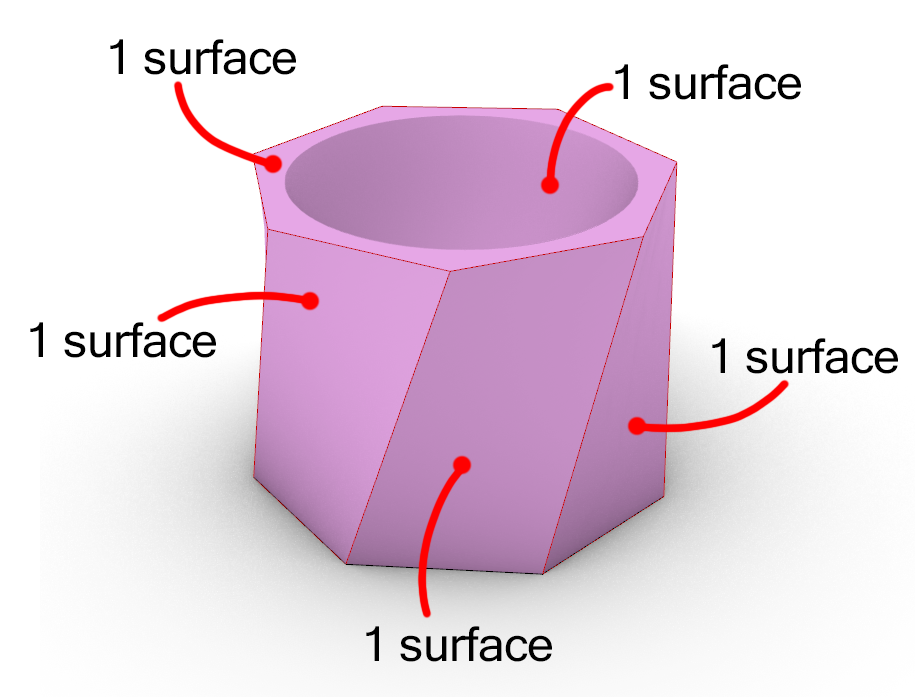
These surfaces together make up a volume, or a so called Boundary Representation (BRep). BReps are intuitive to work with, as they act like objects from the real world.
Using BReps you can easily make all kinds of objects by just adding on or cutting away other shapes. Say for example you want to turn your tea cup into a candle holder. By just creating a cylinder through the tea cup, and using the component Solid Difference, you have now created your own candle holder.
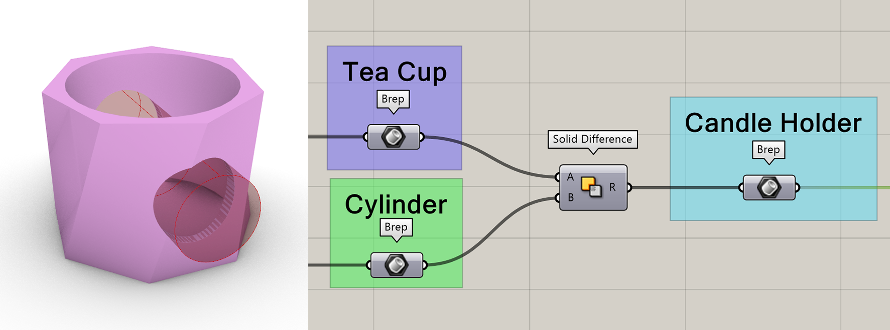
But what if you want to create a candle holder with a lot of holes? Maybe you would even like to add a pattern to the holes?
Using what you learned from Lesson 3 - Data structures, you can construct a list of cylinders and rotate and move them however you would like. Now take the list of cylinders and apply the Solid Difference component from before. You should end up with something like the picture below.
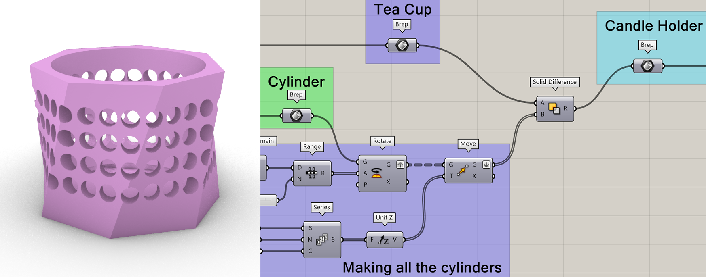
If you did everything correctly, you might have noticed that your Grasshopper seized up for a moment. Operations between BReps, such as Solid Difference, are incredibly computationally heavy, especially when using a lot of shapes.
In Grasshopper you can see how much time each component takes to calculate. In this case the Solid Difference component took over 20 seconds!
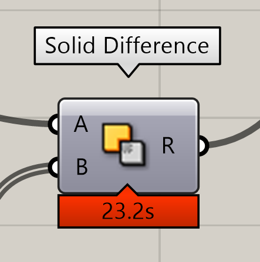
Long computations like this are acceptable for finishing touches on an almost completed design. If you are still actively working on an object however, any small adjustment you make is going to take 20 seconds to calculate.
💡Tip: Can’t see the calculation time? Enable the Profiler in the Grasshopper settings!
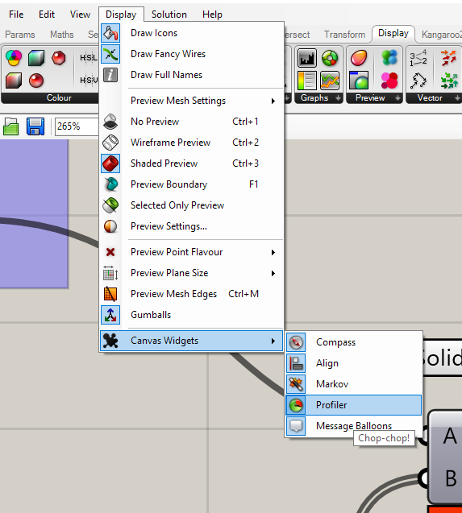
4.2.2 Single surfaces#
In order to create complex patterns and geometries, it is important to understand the basic building block of BReps: a single surface. Single surfaces are not like anything you can encounter in the real world. Surfaces have an area, but no thickness; they are infinitely thin. The shape of a surface is defined by the curvature degree and the number of control points in two directions. The two directions are a type of coordinate system on the surface. The directions on a surface are called the U- and V-directions. Any point on a surface can be described with a (U,V) coordinate. The curves you see on a surface in the U- and V-directions are called Isocurves.
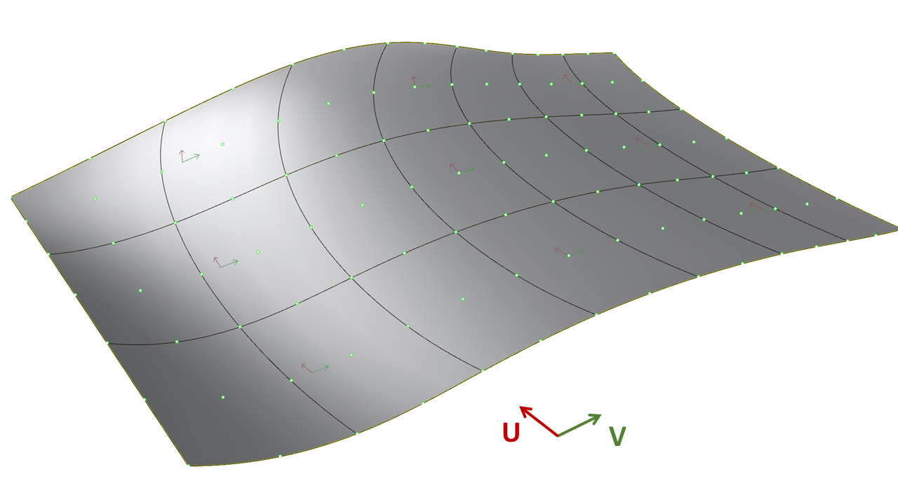
Surfaces also have a third direction, which is called the normal direction or the W-direction. The normal direction is a vector pointing outwards from the surface. Each surface has a front and a backside, which is determined by the direction of the normals. The front is the side where the normals point outwards. To visualize the direction of a surface in Rhino, you can use the [Dir] command. In this command, you also have the option to flip the surface and reverse the U and V directions.
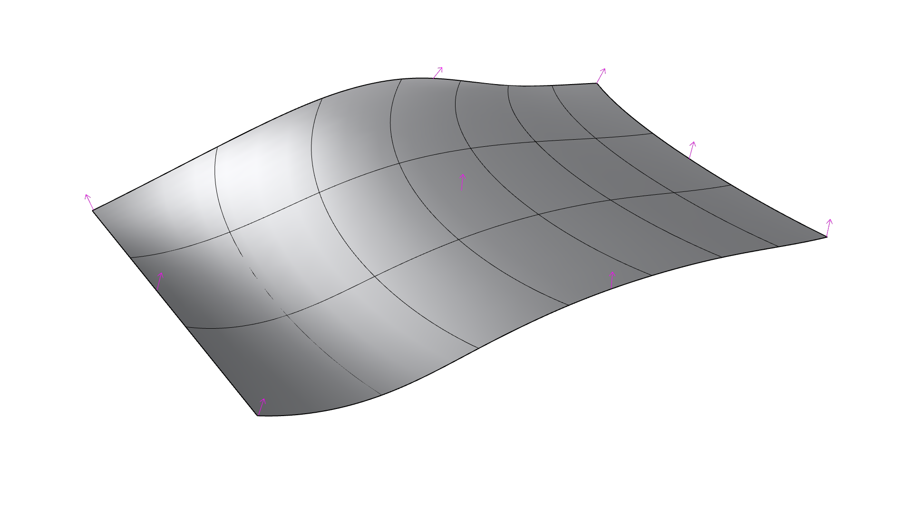
If you would create a hole in this surface, like the candle holder example in the previous paragraph, this creates a trimmed surface. If you turn on the control points (use the [PointsOn] command), you will notice that a trimmed surface has the same UV-grid as the untrimmed surface. The original structure of the surface is always preserved in a trimmed surface.
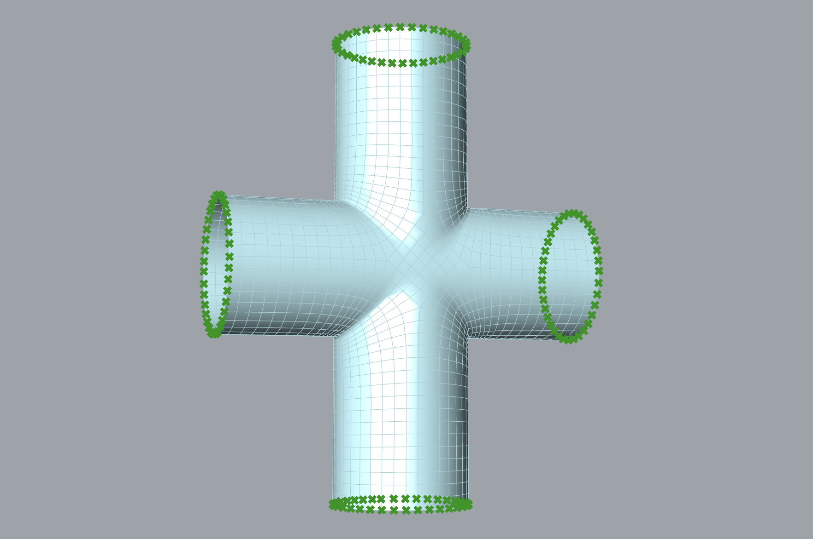
Just like a curve has a domain with a start and end point, a surface has a domain in two directions and edges. You can also Reparameterize surfaces in Grasshopper to make sure the domain of the surface is between 0 and 1. On a reparameterized surface, each point on the surface will have a (U,V) coordinate between (0,0) and (1,1).
A single surface usually looks like a rectangle, but you can also transform it into more complex shapes. Geometries like a sphere and a open cylinder can also be created with a single surface. In these shapes, the surface connects back to itself, creating a seam.
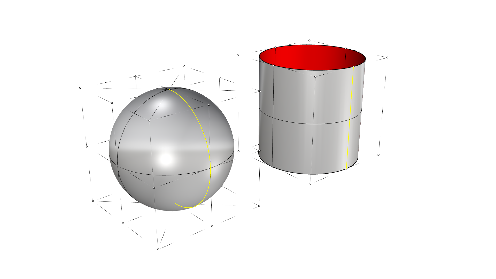
The control points and UV-structure make single surfaces quite easy to work with. You can map complex patterns to a surface by using the (U,V) coordinates and normal direction of the surface. Single surface operations are not as computationally difficult as working with BReps. Therefore it is advisable to try and work with single surfaces for as long as possible.
4.2.3 Polysurfaces#
If you create two surfaces with edges that align, you can join them together to create a polysurface. The egdes of a surface that are not connected to anything are called open or naked edges. The edges that are connected are called interior edges. If a surface does not have any open edges, it is considered a closed shape and we call it a BRep. You can use the ShowEdges command in Rhino or the BRepEdges component in Grasshopper to visualize the edges of any polysurface.
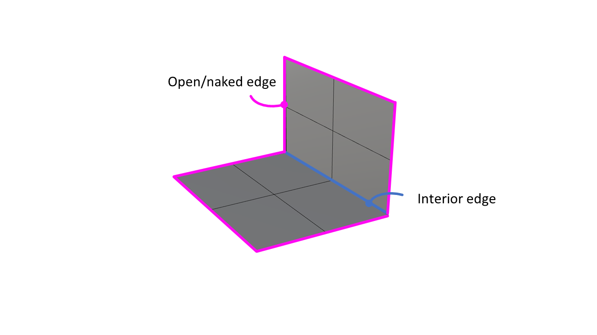
Since a polysurface consists of a collection of joined surfaces, it is no longer possible to use control points to manipulate the UV-grid. You can use the Explode command in Rhino to separate the polysurface back into single surfaces that you can manipulate.
📺 4.3 Designing with surfaces and patterns (50 min)#
💡 What: Creating a surface using curves and creating a surface pattern (tutorials)
For Whom: Beginners in Rhino/Grasshopper
Time: 50 minutes
📺Video Tutorial (30 min):
Download the starting file here:
Lesson 4 - Soapbottle starting file.3dm
📺Video Tutorial (20 min): surface pattern
📺 4.4 Creating an arm brace (30 min)#
💡 What: Creating a surface based on a scan (tutorials)
For Whom: Intermediate in Rhino/Grasshopper
Time: 30 minutes
📺Video Tutorial (20 min): building a brace
Download the scan file here: link
Download the loft script here:
💻 4.5 Assignment (max 2 hours)#
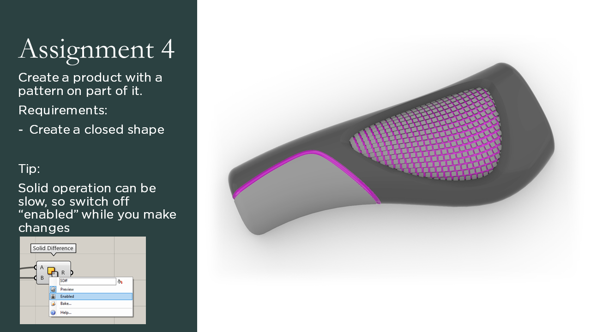
💻 Model a product with a pattern on part of it. It can be a your own design or you can use the starting file to model the bike handle shown in the assignment. The pattern can be any shape you want.
Check out the Student showcase to see what other students made for this assignment.
Download the starting file here: